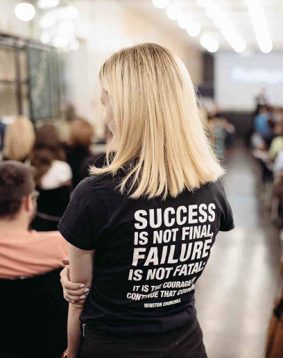

BeInnovative! > Part 1 > Why?
Topic 3 of 4 |  5 min
5 min
5 min
Embracing failure as a way to secure psychological safety
Best failed idea competition
(TATA - India)

The Tata Group is one of India’s most successful companies and its business units make cars & trucks, steel, tea, electricity, chemicals, consulting services, software, and just about everything else. Tata’s internal innovation awards program, InnoVista, showcases numerous brilliant successes each year, but in addition to the awards for the most successful innovations, the company also gave awards to failred “Dare to Try” projects, encouraging the spirit of innovation, by letting people know that risk is an integral part of the game, and failing is not only tolerated, but celebrated.
Fuc*up Nights
(Mexico / Worldwide)

The concept of the Fuc*up Night aims to communicate professional failures openly. Originating in Mexico in 2012, this event concept has spread all over the world and the idea was born when five friends started discussing about why everyone is talking about the success stories rather than talking about obvious failures and they designed the event to introduce a culture of failure as it's seen as a necessary experience that can often be the key to success.
Failure Parties
(Intuit - USA)
Accounting software company Intuit gives a special award for the Best Failure and holds 'failure parties'. Their cofounder Scott Cook explained it once by saying they celebrate failures, because every failure teaches something important that can be the seed for the next great idea. Taking positive lessons from failure and encouraging people to seize the initiative and take risks has to be an integral part of a company’s culture.
1. What would working in a psychological safe working environment feel like to you?
(share your thoughts and you can then download your reflection points at the end of Part 1)
2. Share the last time you turned a failure into a learning opportunity?
(share your thoughts and you can then download your reflection points at the end of Part 1)